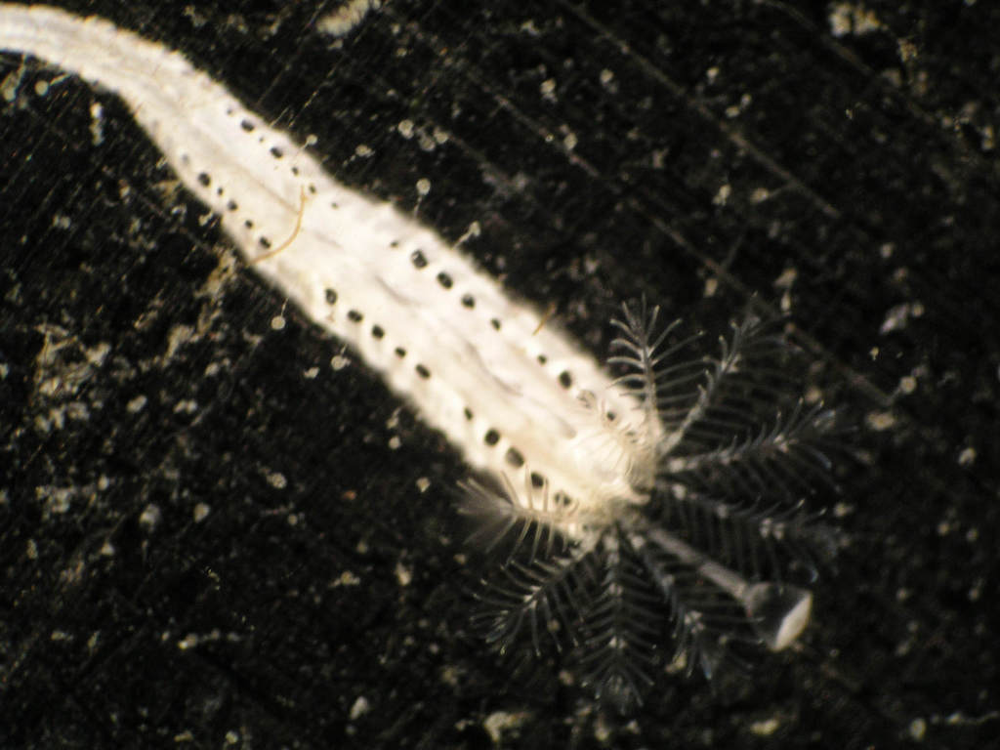
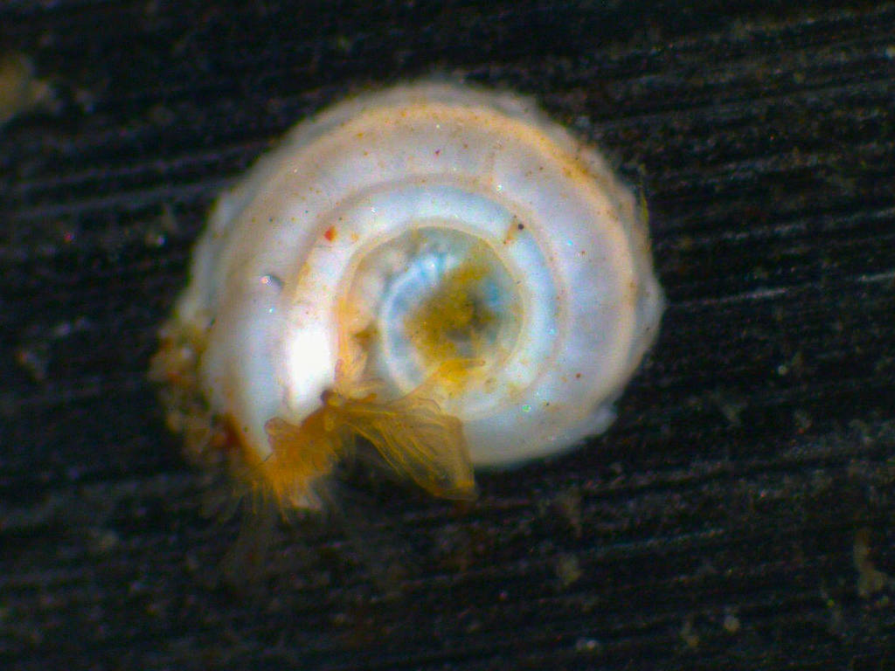
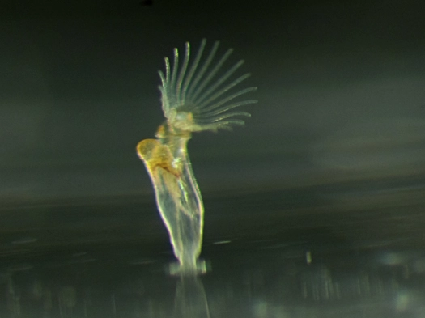

Keough and Raimondi (1995) set up an experiment to examine the response of serpulid (polychaete worms) larvae to four types of biofilms on hard substrata in shallow marine waters. The four treatments were: sterile substrata, biofilms developed in the field with a net (to keep invertebrates), biofilms developed in the lab, and lab biofilms with a covering net (as a control for the presence of a net). The substrata were left for one week, and then the newly settled worms identified and counted. To control for small numbers of larvae passing through the netting during the conditioning period, they used an additional treatment, which was netted, and returned to the laboratory after one week and censused. The values of this treatment were used to adjust the numbers in the treatment that started in the field.

Serpulid polychaete worm. Photo M. Keough
The paper is here and the data file (also used in first edition) is here
Keough, M. J. & Raimondi, P. T. (1995). Responses of settling invertebrate larvae to bioorganic films: effects of different types of films. Journal of Experimental Marine Biology and Ecology, 185, 235-53.
We’re doing this by defining contrasts and refitting the model using this contrast. The planned comparison then appears as the first effect when we look at the model fitting (i.e., film1).
[,1] [,2] [,3]
F -1 -0.67052910 -0.4658942
NL -1 0.73874075 -0.3477481
SL 3 0.00000000 0.0000000
UL -1 -0.06821164 0.8136423
# Refit the model with new contrastsserpulid.aov <-aov(lserp~film, data=serpulid)serpulid.aov
Call:
aov(formula = lserp ~ film, data = serpulid)
Terms:
film Residuals
Sum of Squares 0.2457707 0.3268840
Deg. of Freedom 3 24
Residual standard error: 0.1167055
Estimated effects are balanced
summary.lm(serpulid.aov)
Call:
aov(formula = lserp ~ film, data = serpulid)
Residuals:
Min 1Q Median 3Q Max
-0.22929 -0.06500 0.01843 0.07054 0.19557
Coefficients:
Estimate Std. Error t value Pr(>|t|)
(Intercept) 2.090393 0.022055 94.780 < 2e-16 ***
film1 -0.052131 0.012734 -4.094 0.000415 ***
film2 0.049265 0.044111 1.117 0.275117
film3 -0.008453 0.044111 -0.192 0.849643
---
Signif. codes: 0 '***' 0.001 '**' 0.01 '*' 0.05 '.' 0.1 ' ' 1
Residual standard error: 0.1167 on 24 degrees of freedom
Multiple R-squared: 0.4292, Adjusted R-squared: 0.3578
F-statistic: 6.015 on 3 and 24 DF, p-value: 0.003314
Diagnostics for untransformed data
We used log-transformed data to match the original paper, but if analysing these data from first principles, we’d look at the raw data first to decide which form of model or transformation to use.
Information for power analysis using spirorbids, Bugula
These calculations are used for Box 6.11, where we consider data for two other invertebrate groups, spirorbid polychaetes and bryozoans in the genus Bugula, mainly B. neritina.

Spirorbid polychaete worm, c. 2mm diameter. Mick Keough

Recently metamorphosed bryozoan, Bugula. Approximately 1.5 mm high. Mick Keough
Required information
We need to run the analysis on each of these groups, to get two important pieces of information. We need estimates of the variance, and we generally use the residual mean square. We also want an estimate of a baseline for calculating a hypothetical Effect Size. In the context of this question, we’ll use the means for unfilmed surfaces, as we are thinking about the potential for our treatments to increase recruitment.
film N bugula sd se ci
1 F 7 6.982143 5.520524 2.086562 5.105634
2 NL 7 8.857143 4.740906 1.791894 4.384607
3 SL 7 6.857143 4.740906 1.791894 4.384607
4 UL 7 6.571429 3.779645 1.428571 3.495588
Power calculations
There are two scenarios in Box 6.11. Both involve a doubling of settlement from the base treatment SL above. In the first scenario, one treatment is 6.86 and the others are 13.72. In the second scenario, treatment means are spaced evenly between 6.86 and 13.72.